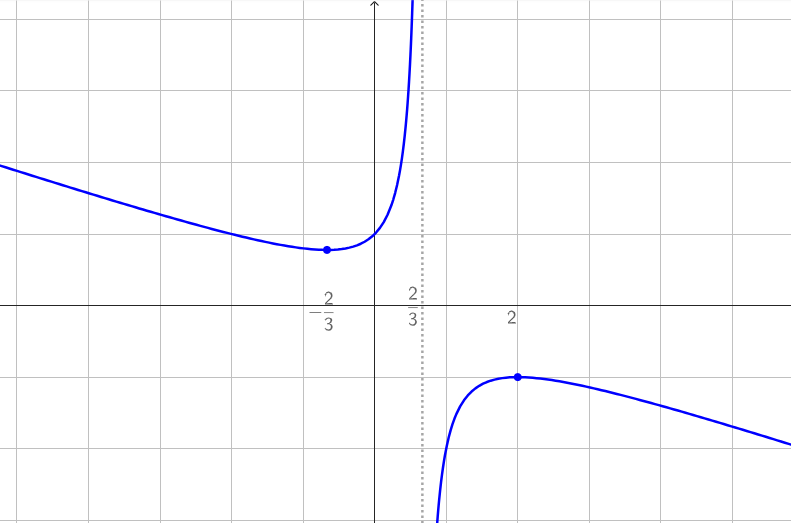
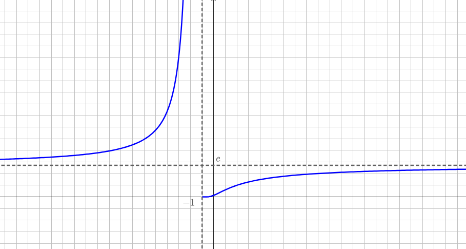

Compiti per casa
Questi esercizi sono di ripasso in vista della verifica di recupero.
Laddove vedere 🚧Work in progress🚧 prima o poi, panettoni permettendo, comparirà un
video di spiegazione dell'esercizio.
Esercizio 1
In vista delle interrogazioni esercitatevi a
ripetere ad alta voce alle seguenti domande:
-
Qual è la definizione di derivata di una funzione \(f\)?
-
Come si interpreta graficamente la derivata \(f'(x)\) di una funzione?
-
Cosa significa studiare gli intervalli di monotonia e qual è il procedimento che
ci consente di farlo?
Esercizio 2
Calcolare le derivate delle seguenti funzioni
\[
f(x) = \dfrac{3x - 1}{2x + 5}
\]
\[
g(x) = ln\left(\dfrac{x}{3e^x - 1}\right)
\]
\[
h(x) = x^2 \cdot ln(2x)
\]
Soluzioni:
\[
f'(x) = \dfrac{17}{(2x + 5)^2}
\]
\[
g'(x) = \dfrac{1 - 3e^x 3xe^x}{x - 3xe^x}
\]
\[
h'(x) = x(1 + 2 ln(2x))
\]
Svolgimento
🚧Work in progress🚧
Esercizio 3
Effettuare lo studio della funzione
\[
f(x) = \dfrac{-x^2 +x -2}{3x - 2}
\]
Soluzione:
Il grafico della funzione è il seguente

Svolgimento
🚧Work in progress🚧
Esercizio 4
Effettuare lo studio della funzione
\[
f(x) = e^{\dfrac{x -2}{x + 1}}
\]
Soluzione:
Il grafico della funzione è il seguente

Svolgimento
🚧Work in progress🚧